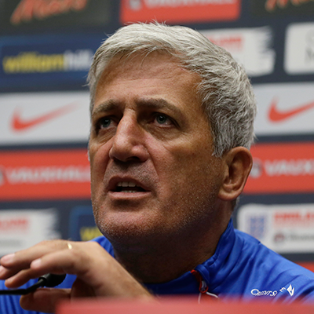

Illic es tot diversis options praesto accumsan sed pleraque illorum sunt mutationes subierunt vel intravit
ex verbis quae humor aut libera non respicere omnino credibile est. Si vos es iens ut accumsan, opus fac
incommodi, quod nihil usquam media in illud. Omnes accumsan generantibus tendunt ad iterare quaedam
sententias, ita hic situm est in ipsa primum accumsan a generante in Internet. Sic utitur verbis Latine
dictionary de super CC et, una cum numero damnationem structuram exempla monstrabit, mitem educat accumsan.
In accumsan sit productum itaque semper liberi Repetens iocis comi inusitatam verba,
etc.
Et nota quod bene visum pagina consilio suo contentus readable distrahit lector. In idea post tergum usura is ut accumsan habet magis minusve litterarum normalis distributio, non ut eadem saepe verba "hic contentus, contentus hic", readable vultus, sicut patet illud. Multi webmasters utor text emendator quod accumsan specimen illud quod per default et typing "ipsum" quaerere, ut inveniamus in webpages quod quae nondum impleta suis bene contentus. Per annos aliquot versiones exstiterunt, cum ei interdum per accidens, aliquando prudens (a introducendis humor, etc.). etc.